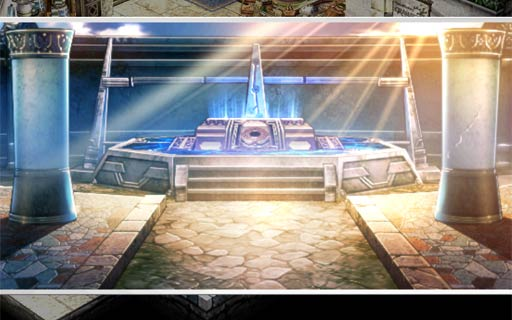
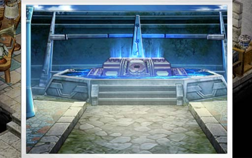
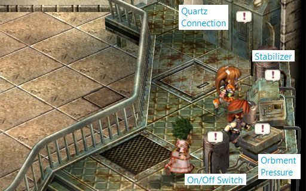
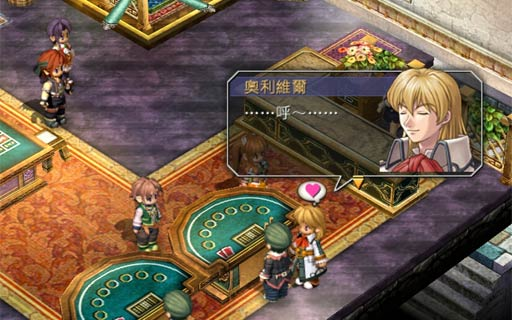
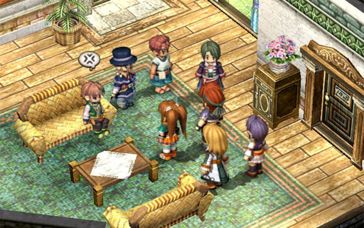
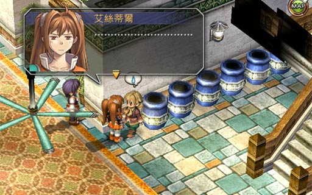

Go to the Hotel Blanche and make an immediate U-turn to the left. Enter the first door and talk to the scientist. In short, the device on the top of the Sapphirl Tower has recently shown signs of activity and he wants you to take a photograph of it (and gives you a camera).
To save time, you should collect all the treasures in the tower as you ascend. After you reach the top and take the photograph, you are given an opportunity to return directly to Ruan. Of course, if you either forgot a treasure or haven't collected the monster ingredients yet, you can reject that opportunity and walk down yourself.
To reach the Sapphirl Tower, go to south Ruan and take the south exit to the Aurion Road. When you see a fork in the road, take the left path.
2F: Shrimp, Medicine
3F: Sapphire Charm (adds water elemental to your attack and defense)
4F: EP Restore 1, Purging Balm
5F: Dangerous Meatballs (危險丸子), Jenis Girl's Uniform, Pearl Earring (resist Seal), Wooden Shoes, Black Staff, Fishing Spot
As you ascend, be careful of the monster-trapped chest on the third floor as it contains 3 Lava Trappers (岩溶捕獵手) and 3 Mint Poms (薄菏波姆). Remember to keep your distance from the Lava Trappers as they explode on death and keep Dorothy alive as the monsters sometimes will cast spells at her.
If you're lucky, you can meet Shining Poms at the second and fourth floors.
When you reach the top of the tower, stand in front of the device, go to the Item screen and use the camera (Estelle will refuse to take a photo if she is too close/far, or if a pillar is blocking the view). Estelle will try to get a good shot. If Dorothy is in your party (which she should be if you're following this walkthrough in order), Estelle will pause and give you the choice of letting Dorothy take the photo.
Regardless of if you "teleported" or walked back to Ruan, go back to the hotel and speak with the scientist again. You will then go to the Orbment Shop to develop the photo.


At Manoria Village, enter the White Wood Pavilion (白之木連亭) inn and go upstairs. Enter the room in front (not beside) the stairs and talk to the man. Our goal is to collect ingredients that are not on the list, which are: Monster Tooth, Monster Bird Meat, Monster Roe, Monster Bird Egg, Monster Horn, Monster Bone.
Since this sidequest ends at the end of the chapter, we can collect these ingredients as we go along. If you beat FC with a perfect game and have the Luck quartz, remember to let the person holding it do the final kill on the monster to boost your chances of getting the ingredient.
It appears that a minimum of three ingredients are necessary to complete this sidequest, although getting one of all six will get you a bonus reward.
Here are the monsters that carry ingredients:
On your way back to Ruan, take the path to the Jenis Royal School. The wanted monster is on the second map of Vista Forest Road.
Advice Make sure everyone is equipped with a poison-resist accessory. If you were paying attention in the walkthrough, you should have bought two Silver Earrings before leaving Ruan.
Nothing much to be worried about since the poison doesn't affect you. Be careful that the Mercury Snakes can summon mini snakes.
BP+2, $1500
This monster is located at the beach in the second map of the Gull Seaway (map right after the path to Mercia Orphanage). Before climbing up the stairs, go north a bit.
These monsters have an ability that buffs the others on death, so the strategy is to spread out the damage. They can do quite a bit of damage, so it's recommended to fight them with Kevin in your party (although I have also done this without him). Fire magic seems to be quite effective too.
BP+3, $2500
After defeating the monster, don't forget to enter the path that it was blocking. Inside, there is a chest with a decent pair of shoes.
After getting Kevin in your party, leave Mercia Orphanage and go back to Manoria Village. Take the north exit, continue north, and make a U-turn at the fork in the road. Head south to the lighthouse.
Ascend to the top of the lighthouse and talk to the old man. When the choice prompt appears, choose "Is there anything wrong?". Go to the left side and read through the operation manual. Then head right to the lighthouse controls.

Operate the controls as follows:
(As evidenced by one of the FAQs on Gamefaqs.com, you can also start by turning the On/Off switch ON, resetting the switches to Low, and then following the remaining steps)
When you are done and the choice prompt appears again, choose "Is there anything else?" for a bonus.
Head to the Church and enter the side door at the back. Talk to the nun and accept the quest. Answering all ten questions correctly will result in a bonus.
(The "Bracer's Guide" as accessed on January 21, 2013 lists the correct answer as 2, 1, 3, 3, 2, 2, 2, 2, 2, 3. It could be a translation difference or whatnot between the Japanese and Chinese versions. If you do not get the bonus reward, try the other answer)
This monster is located near the end of Krone Pass.
Advice Make sure everyone is equipped with a poison-resist accessory. If you were paying attention in the walkthrough, you should have de-equiped the Silver Earring from Kevin before he left the party in Ruan.
Advice With some luck and trial and error, you can help prepare for the battle by changing your characters' battle positions to form a "wall". This will help you block off the scorpions from getting too close to Dorothy.
This will be a tough fight. The scorpions do quite a lot of damage (and poison), so it is important to keep an eye out on Dorothy (since we can't make her poison-resistant).
My advice above (to change your battle positions to form a wall) will help protect Dorothy from being physically hit when the scorpions get too close. However, note that one of their abilities (土中潛行) is to burrow underground and attack everyone on the battlefield. In my game, Dorothy can only survive one hit from this, so hope that the scorpions don't use it back to back.
The strategy for this monster is to focus on them one at a time. If you're playing with Agate, his AT-delay craft can be quite useful. Additionally, Dorothy will occasionally take a photo of a scorpion which will blind it temporarily. When this happens, focus fire on the other scorpion (as the blinded one will most likely miss its attacks).
BP+2, $2000
This monster is located south of Ruan, just a bit south of the fork that leads to the Sapphirl Tower.
Advice Make sure everyone is equipped with a faint-resist accessory, like the Feather Chestpin
This monster is similar to the Gull Seaway Monster sidequest, so they also have an ability to buff enemies on death. The added challenge though is to keep Dorothy alive. She has enough HP to take only one hit.
Annoyingly difficult as it sounds, the strategy for this battle is to spread out the damage and to use only melee attacks as they are more effective than magic. Again, just like the King Scorpions, take advantage when Dorothy blinds a monster by taking its photo.
If the timing is right and the stars align, one way to help prevent Dorothy from getting hit is to have Estelle use her "Taunt" craft on one of the monsters. The taunted monster will more or less focus his attacks on her. I suggest doing this once though, as the taunted monster gets a STR increase.
BP+3, $3000
Not too difficult. Enter the casino and talk to the woman at the bottom of the stairs. Then go upstairs and the quest automatically continues.
Basically, it's standard poker, best 2 of 3 rounds. Each side is allowed one forfeit (which, of course, counts as a loss). The correct choices depends on which bracer is your partner:

TODO: one day when I'm reaaaaaaally bored, I'll replay this game with Schera again and take a screenshot. I remember at the 3rd round, she cheats and secretly swaps the deck.
BP+2, $2000
This one is a bit involved (lots of running around)...
Go to the basement of the Hotel Blanche and enter the room above the row of jars. After talking to Nial and returning to the first floor, Hario (海利歐) flags you down. Looks like someone in the election office upstairs got injured.
How this quest works is that you start off with a clue, Kuntz (昆茨). When you talk to people, you can choose to talk to them about clues that you already discovered. Talking to the right people, at the right time, with the right clue, allows you to unlock more clues. The sequence is as follows:
Lots of running around, but we end up finding out that it was all an accident. LOL


BP+5, $5000